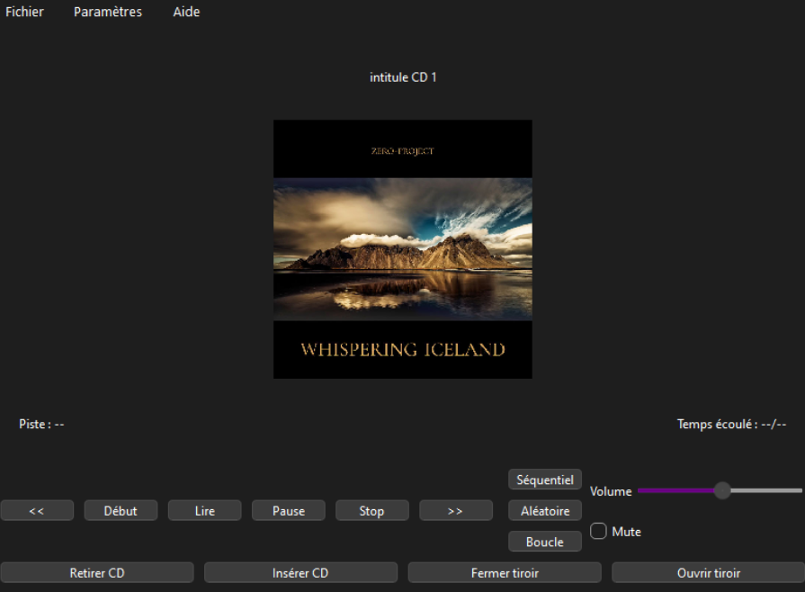

This page is dedicated to all the projects i did for my school or for my personal use.
Passatemps
Passatemps was my first attempt at doing a website. The goal was to do a website from scratch, doing
all the research and the thinking for the visuals, doing the mock up and then of course coding the
website itself.
My group and i decided to keep the project alive because we liked the idea of it
: a second-hand board game sales site. It is now an on going project that we will continue
during our second year of computer science. During our first year, we worked on the project
management, thinking about every aspect and doing a functional specifications to prepare the
actual programming of the project. We are still in the very begining of the process, thinking about
the database structure, how we are going to managed our sprints using the scrum method and learning
new programming languages.
First look at Passatemps
Lecteur CD
As part of a Work and learning situation (SAE), I worked on a project in which I had to design and build a CD player in C++, with a graphical interface using Qt. This gave me the opportunity to explore object-oriented C++ development, as well as Qt to create a clear and functional interface. I learned how to manage the interaction of buttons (play, pause, stop, insert CD, etc.) with the player's operation using Qt's signal and slot system. This project also allowed me to better understand how to structure a graphical project in C++ and to put everything I had learned into practice. I didn't have time to finish the project but i still think my team and i did a pretty good job.
Database
A database was created by a group of developers, of which I am a member, to manage village and competition data. We listened to the needs of a client (represented one of our teacher) and asked questions to design and create the most suitable database possible. We started with a conceptual data schema to visualize the database. Then, a logical schema was created to create and manipulate the database. We then created and populated the tables and ran queries to exploit the database.